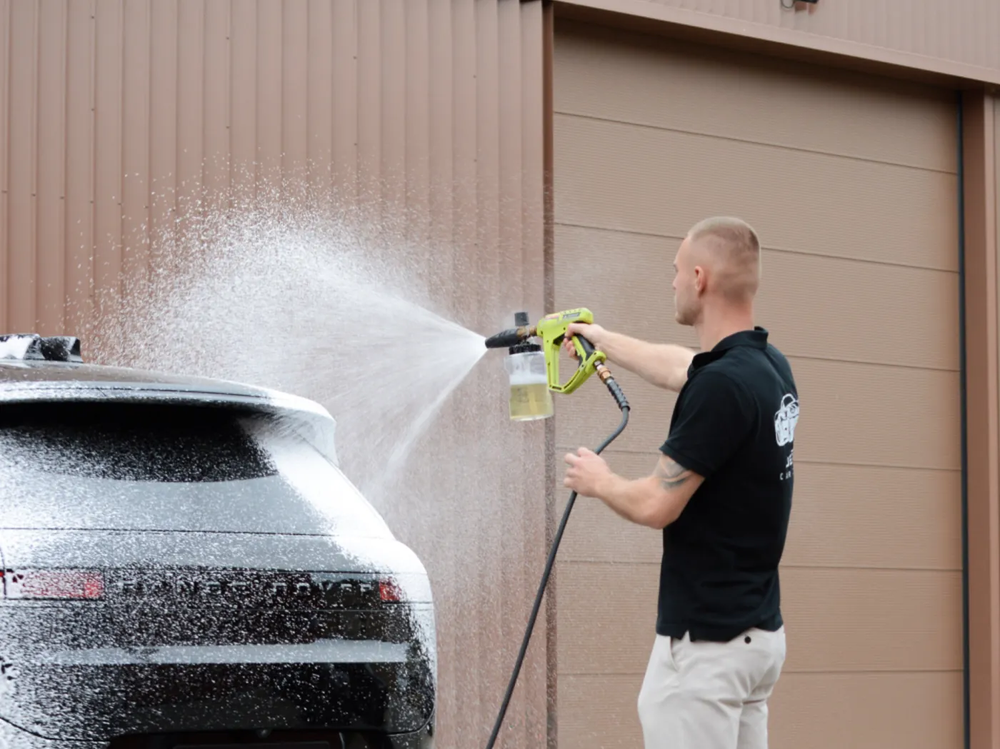
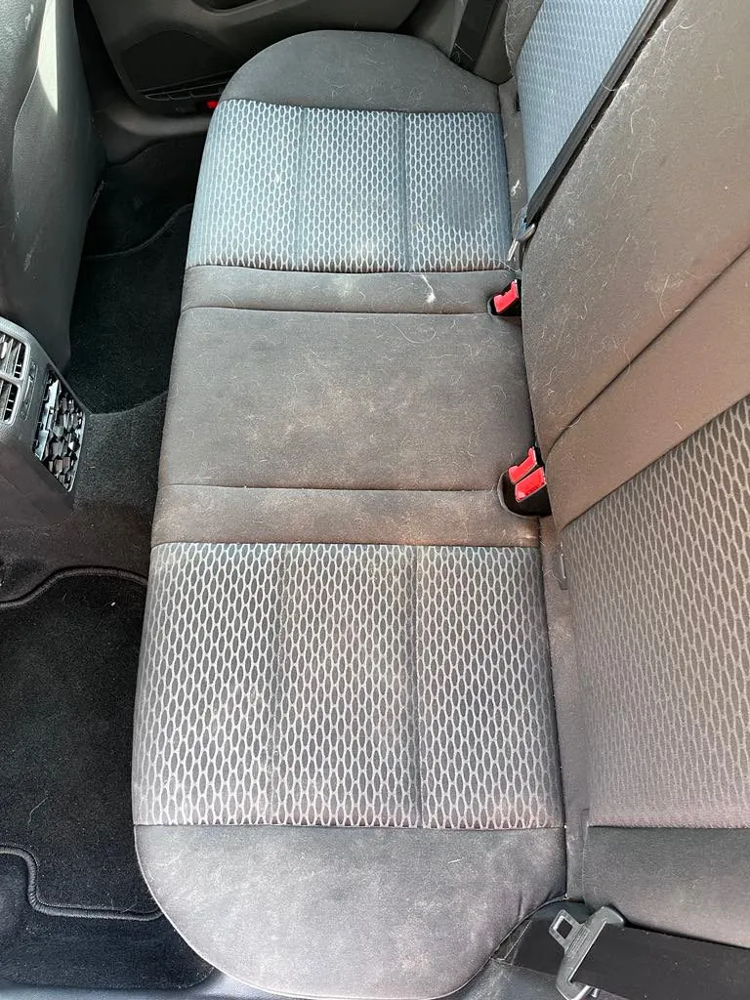
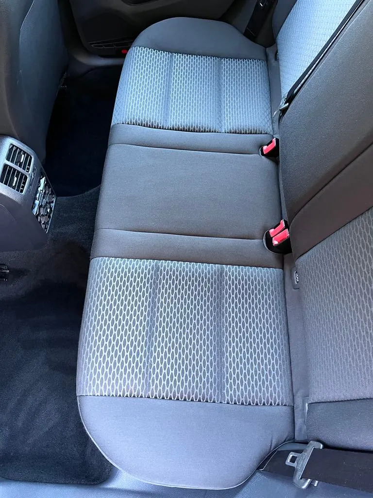
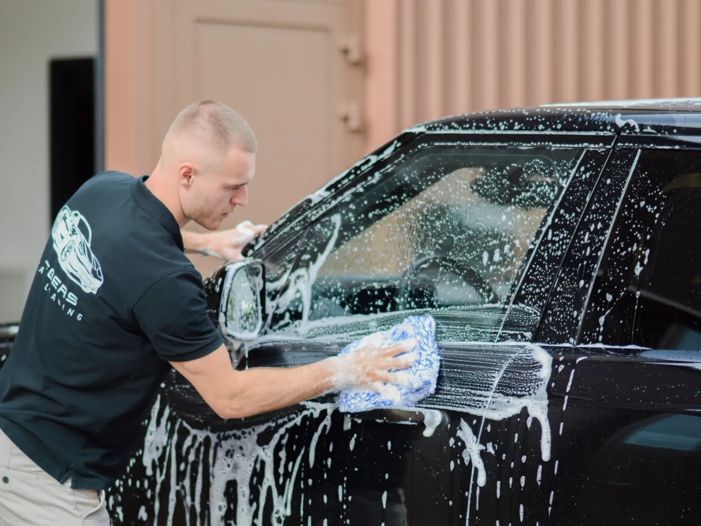
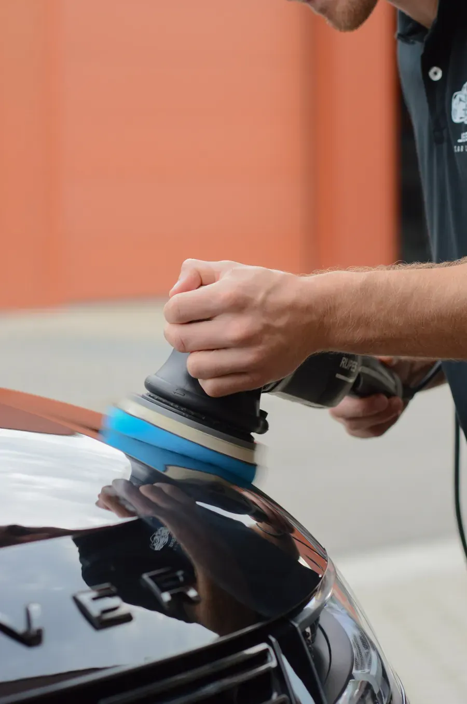
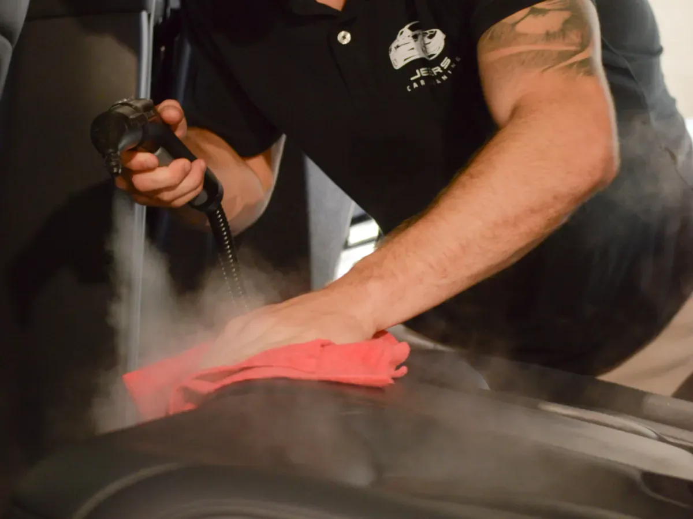
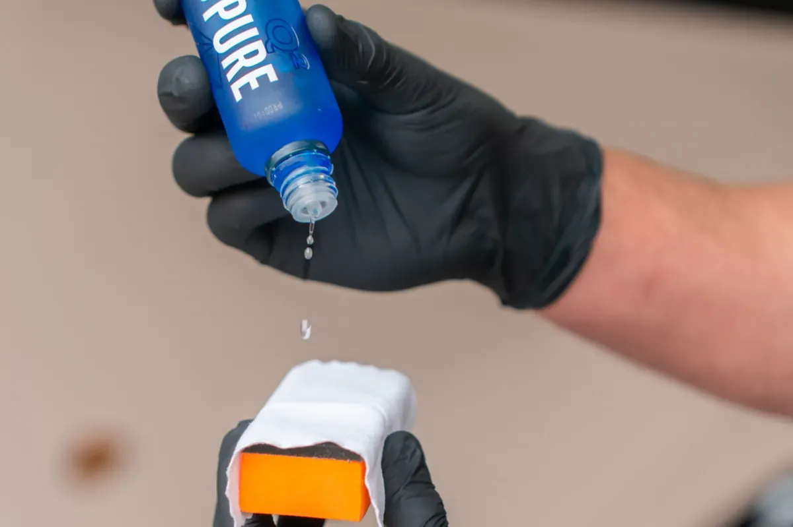
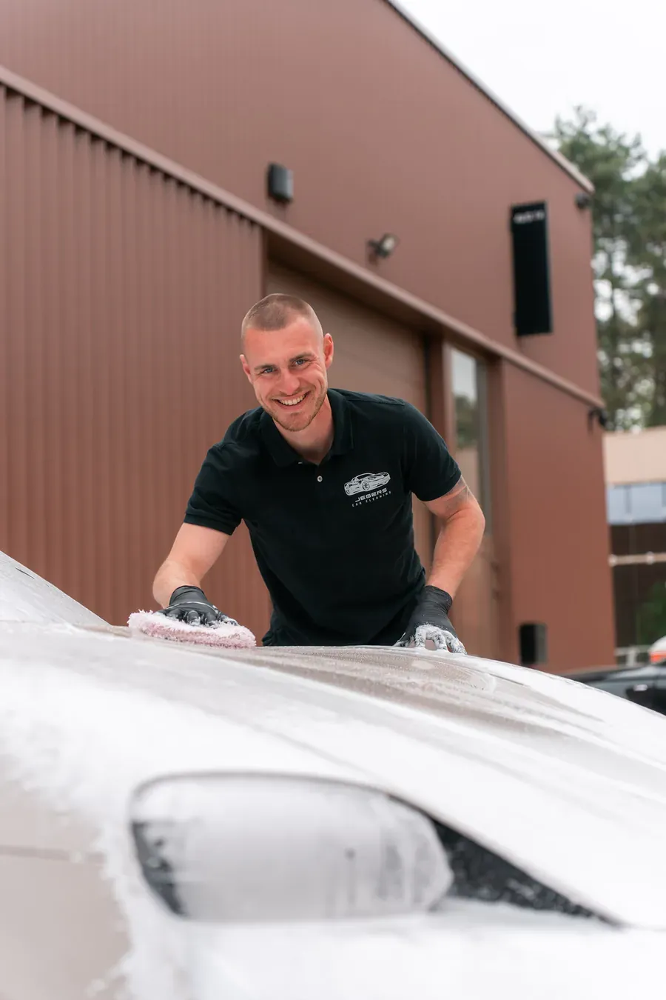

Autodetailing met de hand
Proper tot in de kleinste naad.
Handwas, polijsten, interieur met stoom en keramische coating. In onze hal of bij u thuis, telkens met dezelfde zorg.
4,9 op Google uit 94 reviews
4,9
94 reviews op Google

Voor
NaAchterbank, een paar uur later
Wat we doen
Binnen en buiten, met de hand.
Van een krasvrije handwas tot een polijstbeurt die de diepte terugbrengt in uw lak. Uw wagen krijgt de tijd die hij nodig heeft.




Een vlek in de zetel of krasjes in de lak? Stuur een foto, dan zegt Lowie wat uw wagen nodig heeft.
Foto sturen
Reviews
4,9
Gemiddeld uit 94 reviews op Google
Eén aanspreekpunt, en dat is Lowie.
Krasvrije handwas
Coating voor 2 à 3 jaar
In de hal of aan huis
Mijn auto ziet er weer uit alsof hij net uit de showroom komt. Elk detail is met zoveel zorg aangepakt en de afwerking is gewoon perfect.
Dik in orde! Lowie is correct, vriendelijk én kent zijn job. Top service errond ook.. Aanrader!
Lowie is telkens vriendelijk, stipt en levert uitstekend werk. Onze wagen wordt maandelijks zowel binnen als buiten grondig gereinigd én gepolierd.

U spreekt met Lowie0468 22 11 26
Contact
Klaar voor een frisse wagen?
Stuur een berichtje met uw wagen en wat u graag wil laten doen, dan stelt Lowie een moment voor.
Bosstraat 46, bedrijfshal 153560 Lummen
Plan uw route
Plan uw route